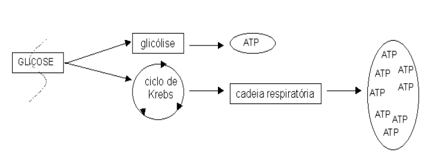
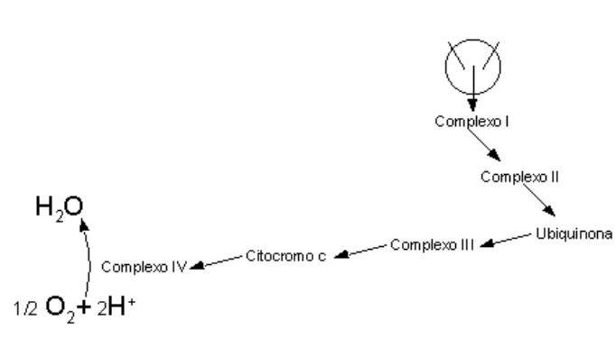

Cadeia Respiratória
Objetivos
- Saber a localização distinta dos processos metabólicos aeróbios (ciclo de Krebs e cadeia respiratória);
- Entender o que é a cadeia respiratória e o por quê desse nome;
- Compreende de que é formada a cadeia, complexos proteicos e não proteicos;
- Saber distinguir as ações dos complexos 1 a 5 da cadeia respiratória;
- Entender como funciona o transporte de elétrons a partir da oxidação de coenzimas metabólicas NADH e FADH2;
- Saber o que é o acomplamento energético da cadeia, bem como exemplificar desacopladores;
- Saber que a cadeia pode ser inibida com especificidade em seus complexos; proteicos, e a importância disso, exemplificando substâncias tóxicas e antibióticas;
- Entender como o ciclo de Krebs está interligado à cadeia respiratória, e suas consequências
- Compreender a hipótese quimiosmótica;
- Saber como a produção de ATP ocorre no complexo 5 da cadeia;
- Entender porque o potencial transmembânico ou o consumo de oxigênio na célula pode ser utilizado como uma medida da cadeia respiratória;
- Entender o significado das razões ATP/O e quociente respiratório (CO2/O2).
Introdução
A imagem mais simples que se pode fazer da cadeia respiratória é a de uma cadeia de alguma coisa, onde acontece um processo de respiração celular. Respiração indica que se precisa de oxigênio. A cadeia respiratória é, portanto, uma cadeia de eventos que só acontece na presença de oxigênio. Mas pra que serve ? Escreve aí: pra produzir ATP. Mas a glicólise não produz ATP, sem precisar de oxigênio ? Sim, mas a cadeia respiratória é capaz de produzir quase 20 vezes mais ATP que a glicólise, sendo portanto de grande valia em sistemas mais complexos que bactérias estritamente fermentadoras. É o caso do o tecido cardíaco ou do exercício de maratona, onde a contração muscular exige grande quantidade de energia provinda da queima de combustível metabólico.
Assim como o ciclo de Krebs, a cadeia respiratória também ocorre na mitocôndria, e só funciona nas células que a possui, fechando o capítulo da bioquímica destinado ao metabolismo intermediário da grande maioria das células conhecidas. A cadeia respiratória funciona com um conjunto de proteínas que, colocadas em sequência, uma ao lado da outra, transferem entre si elétrons, advindos de diversas rotas metabólicas, principalmente do ciclo de Krebs. Isto quer dizer que uma proteína pega elétrons do metabolismo, e passa pra outra, que passa pra outra, e assim por diante.
Mas de onde vêm estes elétrons metabólicos ? Assim como nos ensinava a química ginasial, um composto que perde elétrons fica oxidado. De maneira similar, um composto que ganha elétrons fica reduzido.
Compostos reduzidos têm “mais energia” que compostos oxidados, já que possuem mais elétrons. Quando uma molécula combustível é degradada pelo organismo para a produção de ATP, como a glicose, ela vai sendo continuamente oxidada, com alguns elétrons deixando o composto original e combinando-se com moléculas especiais chamadas de “coenzimas de oxi-redução”. Elas também têm nomes específicos. As mais comuns possuem as siglas NADH e FADH2. Essas moléculas carregam os elétrons doados no processo de oxidação até a cadeia respiratória, transferindo-os em seguida para o conjunto de proteínas existentes nesta.
Juntamente com os elétrons, as coenzimas de oxi-redução também carregam prótons H+, também oriundos da oxidação do mesmo combustível metabólico. Pra não confundir tanto assim: as coenzimas de oxi-redução carregam elétrons e H+ doados nas várias etapas da queima de combustível metabólico.
Uma combinação especial no transporte de elétrons e de H+ nas proteínas da cadeia respiratória é a verdadeira responsável pela produção da enorme quantidade de ATP mencionada acima e, por consequência, do funcionamento de células que precisam produzir muito ATP além daquele obtido pela fermentação da glicólise. E o oxigênio ? Bom, o oxigênio é necessário na cadeia para receber os elétrons que estão passando de proteína em proteína, como um goleiro assustado em uma partida de ludopédio, afinal de contas, os elétrons, assim como a bola, têm de parar em algum lugar.

Detalhes
A cadeia respiratória, ou fosforilação oxidativa, é a principal rota de produção de ATP em tecidos contendo mitocôndrias. Basicamente, o ATP é produzido a partir do fluxo de elétrons de NADH e FADH2 entre proteínas da membrana mitocondrial interna, com captação final desses elétrons pelo oxigênio. O ATP assim produzido pode ser agora utilizado na contração muscular, transporte de íons e termogênese. As estruturas envolvidas no fluxo de elétrons, bem como a sequência de sua disposição na membrana, formam os complexos I (NADH desidrogenase), II (succinato desidrogenase), coenzima Q (ubiquinona, a única de natureza não protéica, e que recebe elétrons tanto do complexo I como do II), III (citocromos bc) e IV (citocromo oxidase).
Em poucas palavras, os complexos I e II catalisam a transferência de elétrons até a ubiquinona, a partir de dois doadores de elétrons diferentes: NADH (complexo I) e succinato (complexo II). O complexo III transporta elétrons da ubiquinona até o citocromo c, e o complexo IV completa a sequência transferindo elétrons do citocromo c até o O2. A lógica da produção de ATP pela cadeia respiratória se baseia na hipótese quimiosmótica.
Cada NADH e FADH2 que é oxidado na cadeia libera prótons H+, gerando um gradiente de concentração destes (uma diferença de pH no espaço inter-membranoso) que força sua passagem pelo interior da ATP sintase da membrana mitocondrial, promovendo sua transconformação e consequente redução do ADP a ela ligado. Pelo fato do FADH2 ser menos reduzido que o NADH, o primeiro origina 2 ATPs e o segundo, 3 ATP. Estruturalmente, a NADH desidrogenase constitui um complexo de flavoproteínas contendo 25 cadeias polipeptídicas orientadas para a matriz, e que recebe o íon hidreto (dois elétrons e um próton) do NADH, transferindo os elétrons para o seu grupo prostético, FMN, e deste para a ubiquinona.
A transferência se dá por 7 centros de Fe-S, os quais podem ser inibidos por barbitúricos (amital), rotenona (produto vegetal utilizado em flexas indígenas e na elaboração de inseticidas), e pelo antibiótico piericidina A. O complexo II, succinato desidrogenase, única proteína do ciclo de Krebs ligada à membrana, possui duas proteínas contendo um centro Fe-S cada. Acredita-se que os elétrons passem do succinato para o FAD da primeira proteína, e depois dos centros Fe-S até a ubiquinona.
Outros substratos para as desidrogenases mitocondriais também passam elétrons para a cadeia respiratória, ao nível da ubiquinona, mas através do complexo II. Assim ocorre com a acil-CoA desidrogenase (oxidação de ácidos graxos), e a glicerol-3-P-desidrogenase (transporte de equivalentes redutores do NADH citosólico para a matriz mitocondrial). O complexo III contém os citocromos b562 , b566 e c, além de uma proteína Fe-S, e pelo menos 6 outras subunidades protéicas.
A transferência de elétrons da ubiquinona para o complexo II envolve uma série de etapas (ciclo Q) que culminam na oxidação da ubiquinona e redução do citocromo c. É justamente no complexo III, orientado assimetricamente, que os prótons H+ liberados vão para o espaço inter-membranoso, gerando um diferencial de pH que possibilita a produção de ATP (bomba de prótons). No complexo IV, contendo os citocromos a e a3, possuidores de 2 grupos heme e de 2 centros de íons Cu, ambos vitais na redução dos 4 elétrons de O2 para a produção final de H2O. Termodinamicamente, o ATP necessita de um \(\Delta\)G0, de -52 kJ/mol para sua formação. Neste sentido, a transferência do NADH libera -220 kJ/mol, e do succinato, -152 kJ/mol, energia suficiente para a síntese de ATP, com o excedente podendo ser utilizado para a manutenção térmica do organismo.
O ATP, como já mencionado, é produzido pelo acoplamento da passagem de elétrons à fosforilação. Inibidores da passagem de elétrons ao O2, como o cianeto, o CO, azida e antimicina A, bloqueiam a síntese de ATP. Oligomicina e venturicidina, ambos antibióticos tóxicos , por sua vez, bloqueiam a ATP sintase da membrana, etapa final da cadeia respiratória na produção de ATP. Outro bloqueio na produção de energia pode ser realizado através de desacopladores da cadeira respiratória. Estes, representados pelo dinitrofenol e pela valinomicina (ionóforo de K+), difundem-se pela membrana mitocondrial, criando um curto-circuito elétrico através da membrana.
Fisiologicamente, contudo, existem desacopladores regulados, como a termogenina de animais hibernantes, proteína de membrana mitocondrial rica no tecido adiposo marrom (cor resultante do acúmulo de mitocôndrias), e que atua como um canal de prótons na membrana mitocondrial, dissipando o fluxo de elétrons e gerando calor. Como consequência, ocorre uma produção excessiva de calor, uma vez que o fluxo de elétrons não atinge o complexo final da ATP sintase. Esta enzima, formada pelas subunidades F0 e F1, atua como uma força próton-motora na geração de ATP. Pela teoria quimiosmótica, a transferência de elétrons ao longo da cadeia respiratória é acompanhada pelo bombeamento de prótons para fora da membrana mitocondrial interna, o que leva a uma diferença na concentração de prótons transmembrana (um gradiente de prótons) e, portanto, de pH; a matriz torna-se relativamente alcalina ao lado citosólico da membrana.
A energia eletroquímica inerente nesta diferença de concentração de prótons e separação de carga, a força próton-motora, representa uma conservação de parte da energia de oxidação. A força próton-motora é subsequentemente usada para impulsionar a síntese do ATP catalisada pela subunidade F1 da ATP sintase, à medida que os prótons fluem passivamente de volta para a matriz, através dos poros formados pela subunidade F0 da mesma enzima.

Síntese
- Conceito: via de produção de ATP que ocorre na presença de O2 , através do fluxo de elétrons entre proteínas mitocondriais;
- Importância: síntese de ATP, transporte de íons, contração muscular, termogênese;
- Localização: mitocôndria (membrana);
- Complexos protéicos (I, II, Ubiquinona, III, e IV);
- Lógica da via: transferência de prótons e elétrons para produção de ATP; hipótese quimiosmótica: oxidações de coenzimas acarretam diferença de pH no espaço intermembranoso da mitocôndria, forçando sua restauração pela passagem de prótons para a matriz no interior da ATP sintase, com concomitante geração de ATP;
- Diferenças do rendimento de ATP de NADH e FADH2; como o FADH2 é menos energético que o NADH, ele se liga mais adiante na via, gerando 2 ATPs; o NADH, por sua vez, se liga no início da mesma, com consequente produção de 3 ATPs;
- Inibição por drogas: amital, barbitúricos, CO, e azida;
- Desacoplamento energético: o transporte de elétrons e a produção de ATP podem ser desacoplado por substâncias como o dinitrofenol (capta H+), gerando calor mas nenhum ATP; animais hibernantes possuem termogenina, uma proteína de igual ação;
- Antibióticos: oligomicina e antimicina se ligam em proteínas da cadeia, inativando-a.